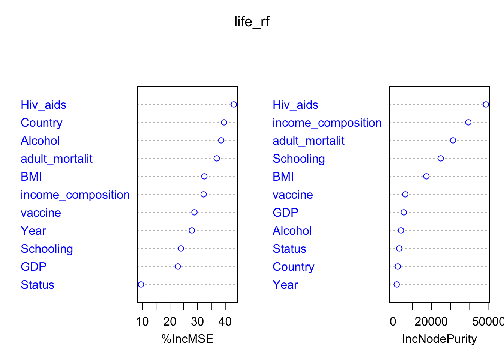

The dataset for this project is life expectancy data. It contains the health factors and economic data for 193 countries from year 2000 to 2015. What’s more, the health factor data is collected from World Health Organization (WHO) while the economic data is from the United Nation website. Life expectancy data contains 2938 rows, and each row is the life expectancy related information for a country in a specific year. The data set has 22 columns, including the immunization, mortality, economy and society related information. Specifically, Life expectancy data includes variables “Country”, “Year”, “Status”, “Life expectancy”, “GDP”, “Adult Mortality”, “BMI”, “Schooling”, “Hepatitis B”, “Alcohol” and so on. There are total 2938 rows.
The question that I am going to answer based on this dataset is as follows: For the given life expectancy related variables, which variables greatly affect the life expectancy? How those factors affect the life expectancy?
By knowing the above question, we may change situation of the specific variables to improve the life expectancy of a person/country, and we can use the variables to generate an effective model to predict the life expectancy by given information.
The life expeactancy data set is download from Kaggle.
The main methods for this project is shown as follows:
Use rename() in dplyr library to rename column names.
Use ggplot2/plotly to plot most plots.
Use corPlot() in psych library to plot correlation plot.
Use ggarrange() in ggpubr library to combine plots
Use facet_zoom() in ggforce library to enlargr part of points plot.
Use lm() and gam() in mgcv library to generate Multiple linear models.
Use repart() in rpart library to fit regression tree.
Use repart.plot() in rpart.plot library to plot regression tree.
Use randomForest() in randomForest library for bagging and random forest, and use varImpPlot() to construct a vraible importance plot.
First, Change the variable names of the data in order to better use and understand the columns, such as, “Life expectancy” to “life_expectancy”, and show the missing data information.
| type | mean | n_NA | |
|---|---|---|---|
| country | character | 173 countries | 0 |
| year | integer | 2000-2015 | 0 |
| status | character | Developed/Developing | 0 |
| life_expectancy | double | 69.2249316939891 | 10 |
| adult_mortalit | integer | 164.796448087432 | 10 |
| infant_deaths | integer | 30.3039482641253 | 0 |
| alcohol | double | 4.60286078717201 | 194 |
| percentage_expenditure | double | 738.251295453383 | 0 |
| Hepatitis_B | integer | 80.9404612159329 | 553 |
| measles | integer | 2419.59223961879 | 0 |
| bmi | double | 38.3212465564738 | 34 |
| under_five_deaths | integer | 42.0357385976855 | 0 |
| polio | integer | 82.550188420692 | 19 |
| total_expenditure | double | 5.9381895280236 | 226 |
| diphtheria | integer | 82.3240835902706 | 19 |
| Hiv_aids | double | 1.74210347174949 | 0 |
| gdp | double | 7483.15846913847 | 448 |
| population | double | 12753375.1200525 | 652 |
| thinness_1_19 | double | 4.83970385674931 | 34 |
| thinness_5_9 | double | 4.87031680440771 | 34 |
| income_composition | double | 0.627551064597618 | 167 |
| Schooling | double | 11.9927927927928 | 163 |
By counting the missing values, I found that missing values are mainly concentrated in Hepatitis_B, GDP, population and total_expenditure variables, and are concentrated in countries such as South Sudan and Somalia where information may be difficult to collect. Since these missing data are difficult to find, I replaced the missing values with the mean values for those variables with the same status (developed/developing) and year values.
Related to the wrong data, I found the population values for a country varies a lot from 2000 to 2015, and it looks like the unit of population are different in different years. Therefore, I omitted the population variables. Also, there exists BMI value less than 10, which is obviously wrong, I replaced those values with the mean BMI(without BMI \(<\) 10) of the same country. What’s more, there exists countries with 0 years of schooling, I replaced those values with the mean schooling values of the same status.
| min | mean | median | max |
|---|---|---|---|
| 36.3 | 69.22496 | 72 | 89 |
Some countries has higher mean of expectancy among 2000-2015, such as Slovenia has mean of life expectancy 88, and “Denmark”, “Chile”, “Cyprus” and “Japan” have life expectancy higher than 83.5. However, some countries have low life expectancy. For example, “Sierra Leone” has life expectancy of 51, and “Angola” and “Central African Republic” have life expectancy less than 53.
create a column called “vaccine” to be the mean of Hepatitis_B, Polio and Diphtheria vaccination rate.
Create a new column called “obesity_level” according to the BMI value.
If BMI\(<18.5\), obesity_level is “underweight”, if BMI is greater or equal 18.5 and smaller than 24.9, obesity_level is “normal”. If the BMI is greater or equal 24.9 and smaller than 29.9, obesity_level is “overweight”. Otherwise, “obese”.
The data we analysis focus on 2015.
As shown by the above graph, developed countries has higer min, mean, and max values of life expectancy than developing countries, and the range of life expectancy for developed countries is shorter than developing countries in 2015.
As shown by the above graph, the mean, min and max values of life expectancy over all countries increases as the year variable increases from 2000 to 2015.
The mean of the life expectancy ordered by obesity_level is shown as follows: normal \(<\) underweight \(<\) overweight \(<\) obese, and it seems strange since people with normal obesity_level have the lowest life expectancy.
Generate scatterplots and smooth lines for the full data set.
From the above graph, the life expectancy increases as GDP increases, but the life_expectancy stays still when GDP reaches a certain level.
As alcohol increases, the life expectancy increases, but the range of life expectancy for alcohol level are large. Also, most developed countries have high alcohol level.
It is obvious that the life_expectancy increases as schooling year increase, and developed countries has higher schooling years.
As BMI increases, the life expectancy increases, but the range of life expectancy for BMI are large. Also, most developed countries have high BMI level.
Overall, as vaccine increases, the life expectancy increases, but the life expectancy varies a lot for the same vaccine level.
There is a strong linear relationship between adult_mortality and life expectancy. As the adult mortality increases, the life expectancy decreases.
From the enlarge part of the plot, we can see that in overall, as the Hiv/Aids deaths of child 0-4 per 1000 increases, the life_expectancy decreases.
From the above graph, as the income composition of resources increases, the life expectancy increases. The size of the point in the above graph shows the GDP of the data.
As we can see from the above, many countries has life expectancy stay still or increases during 2000 to 2015. However, for some countries, the life expectancy may change a lot for a specific year. For example, the life expectancy of Halti in 2009 and 2011 is around 62, and the 2000 is 36.3, and the 2010 Haiti earthquake is the main reason causing the low life expectancy.
The overall distribution of life expectancy is normal distribution with right skewed, and the mean of the life_expectancy is around 73, and the mode is 75. Most countries are developing countries, and the distribution of life_expectancy for developing countries is right skewed, the mode is around 75. The distribution of life expectancy for developed countries is around normal, and mode of is around 82. The distribution of life expectancy for developed countries is on the right of the distribution of developing countries.
More than half of the countries are developing countries with obese obesity_level. The proportion of developed countries in each obesity_level categories is as follows: 0\(\%\) normal obesity_level countries are developed countries, 6\(\%\) overweight obesity_level countries are developed countries, 0\(\%\) underweight obesity_level countries are developed countries, and 30.78\(\%\) obese obesity_level countries are developed countries.
As shown from the above graph, income composition, Schooling, adult_mortality, BMI, Hiv_aids, vaccine has the correlation value higher than 0.5 with life expectancy. Also, the correlation between Schooling and income composition is 0.92, which is very higher. The correlation between GDP and income_composition/Schooling is 0.74/0.68. Furthermore, The correlation between adult_mortality and BMI/Hiv_aids/income_composition, Alcohol and income_composition/Schooling are all around 0.5-0.65.
The following models use full life data set
Null hypothesis: true difference in means between group Developed and group Developing equals to 0.
Since p-value < 2.2e-16 < 0.05, we will reject the null hypothesis that means between group Developed and group Developing equals to 0.
Null hypothesis: true difference of life expectancy in means between year 2000 and year 2015 equals to 0.
Since p-value < 8.104e-07 < 0.05, we will reject the null hypothesis that true difference of life expectancy in means between year 2000 and year 2015 equals to 0.
From the above analysis, we can find that the life expectancy is highly affected by income composition, Schooling, adult_mortality, BMI, Hiv_aids, vaccine, and income_compostion is highly related to many variables, such as Schooling, GDP, adult_mortality and Alcohol, so I will use Hiv_aids, Country, Year, Status, adult_mortalit, Alcohol, BMI, GDP, Schooling and vaccine to predict life expectancy.
From the result of lm, the R-squared is around 0.9611, and the R-squared for gam is around 0.963, so the gam fits the data slightly better since it can change line direction to fit data. However, since the r-squared for both models are high, the difference can be ignore, we may need to care about over-fitting problem due to so high R-squared.
The MSE for regression tree is 9.972(cp=0.002), and the MSE for bagging is 3.6989. The MSE for random forest is 3.39. Since Random Forest has the lowest MSE, I will choose it to be the desired model.

In summary, the variables that greatly affect life expectancy including income composition, Schooling, adult_mortality, BMI, Hiv_aids and vaccine. The correlation between Schooling and income composition is 0.92, which is very higher, and the correlation between GDP and income_composition/Schooling is 0.74/0.68. Furthermore, The correlation between adult_mortality and BMI/Hiv_aids/income_composition, Alcohol and income_composition/Schooling are around 0.5-0.65.
Developed countries has an average of 13 years life expectancy than developing countries.
The mean life expectancy over all countries increases from 2000 to 2015.
As adult_mortality/Hiv_aids increases, the life_expectancy decreases.
The life expectancy increases as GDP increases, but the life_expectancy stays still when GDP reaches a certain high level.
The higher vaccine/income_compostion of resources/GDP/Schooling, the higher the life expectancy, but the life_expectancy stays still when GDP reaches a certain high level. Developed countries has higher schooling years, BMI and vaccine.
The mean of the life expectancy ordered by obesity_level is shown as follows: normal \(<\) overweight \(<\) underweight \(<\) obese. More than \(60\%\) of the countries in the obese obesity_level. For developed countries, the increase of BMI has no obvious effect on life expectancy. However, the developing countries with higher BMI have higher life expectancy.
By using Hiv_aids, Country, Year, Status, adult_mortalit, Alcohol, BMI, GDP, income_composition, Schooling and vaccine to predict life expectancy in linear model, the R-squared is around 96\(\%\), so 96\(\%\) of data can be explained by the model.
The MSE for regression tree model with cp=0.002 is 9.972, and the MSE for bagging model is 3.6989. In addition, the MSE for random forest is 3.39. Since Random Forest has the lowest MSE, I choose it to be the desired model to predict life expectancy.
github link for this project: https://github.com/Jianhong-Guo/Life_expectancy_Analysis_JSC370
Copyright © 2022, Meredith Franklin.